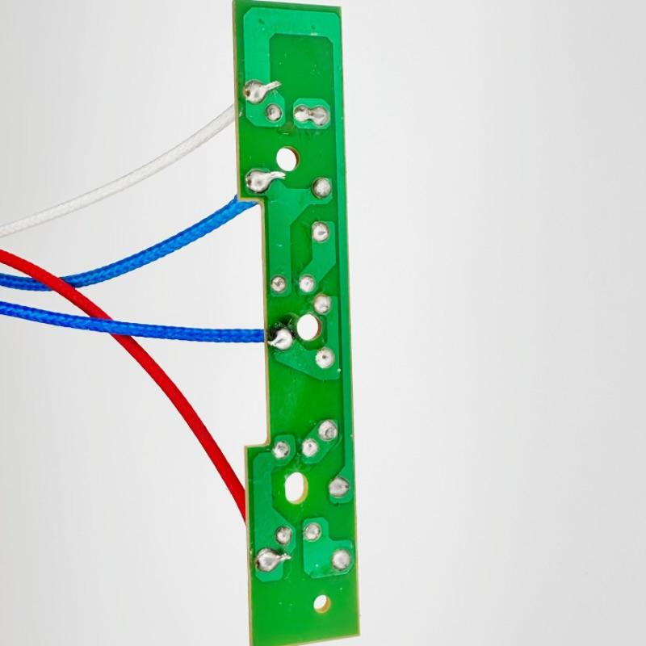

Refrigerator
Precision Temperature Control for Commercial Refrigerators
A leading refrigerator manufacturer in Southeast Asia needed reliable NTC thermistor sensors for their commercial-grade refrigeration units. CONNSENSOR delivered TS-100 sensors with ±0.5°C accuracy, enabling precise temperature regulation across multi-zone compartments.
- ✅ Temperature Range: -30°C to +20°C
- ✅ Response Time: <3 seconds
- ✅ Long-term Stability: 5+ years MTBF